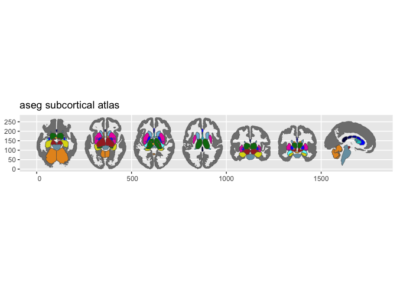
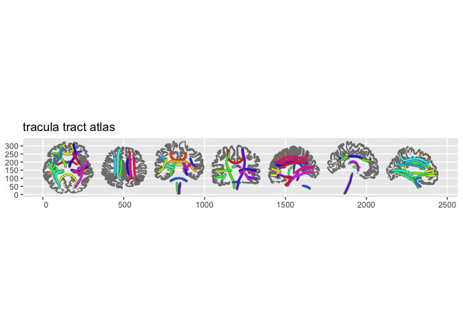

ggseg.formats provides the ggseg_atlas S3 class that powers the ggseg ecosystem for 2D and 3D brain visualisation. It ships three bundled atlases, a set of accessor functions for querying atlas contents, and a pipe-friendly manipulation API for subsetting, renaming, and enriching atlas objects.
Bundled atlases
The package includes three atlases covering the main atlas types:
- dk — Desikan-Killiany cortical parcellation (68 regions)
- aseg — FreeSurfer automatic subcortical segmentation
- tracula — TRACULA white matter tract atlas
library(ggseg.formats)
dk
#>
#> ── dk ggseg atlas ──────────────────────────────────────────────────────────────
#> Type: cortical
#> Regions: 35
#> Hemispheres: left, right
#> Views: inferior, lateral, medial, superior
#> Palette: ✔
#> Rendering: ✔ ggseg
#> ✔ ggseg3d (vertices)
#> ────────────────────────────────────────────────────────────────────────────────
#> # A tibble: 70 × 4
#> hemi region label lobe
#> <chr> <chr> <chr> <chr>
#> 1 left banks of superior temporal sulcus lh_bankssts temporal
#> 2 left caudal anterior cingulate lh_caudalanteriorcingulate cingulate
#> 3 left caudal middle frontal lh_caudalmiddlefrontal frontal
#> 4 left corpus callosum lh_corpuscallosum white ma…
#> 5 left cuneus lh_cuneus occipital
#> 6 left entorhinal lh_entorhinal temporal
#> 7 left fusiform lh_fusiform temporal
#> 8 left inferior parietal lh_inferiorparietal parietal
#> 9 left inferior temporal lh_inferiortemporal temporal
#> 10 left isthmus cingulate lh_isthmuscingulate cingulate
#> 11 left lateral occipital lh_lateraloccipital occipital
#> 12 left lateral orbitofrontal lh_lateralorbitofrontal frontal
#> 13 left lingual lh_lingual occipital
#> 14 left medial orbitofrontal lh_medialorbitofrontal frontal
#> 15 left middle temporal lh_middletemporal temporal
#> 16 left parahippocampal lh_parahippocampal temporal
#> 17 left paracentral lh_paracentral frontal
#> 18 left pars opercularis lh_parsopercularis frontal
#> 19 left pars orbitalis lh_parsorbitalis frontal
#> 20 left pars triangularis lh_parstriangularis frontal
#> 21 left pericalcarine lh_pericalcarine occipital
#> 22 left postcentral lh_postcentral parietal
#> 23 left posterior cingulate lh_posteriorcingulate cingulate
#> 24 left precentral lh_precentral frontal
#> 25 left precuneus lh_precuneus parietal
#> 26 left rostral anterior cingulate lh_rostralanteriorcingulate cingulate
#> 27 left rostral middle frontal lh_rostralmiddlefrontal frontal
#> 28 left superior frontal lh_superiorfrontal frontal
#> 29 left superior parietal lh_superiorparietal parietal
#> 30 left superior temporal lh_superiortemporal temporal
#> 31 left supramarginal lh_supramarginal parietal
#> 32 left frontal pole lh_frontalpole frontal
#> 33 left temporal pole lh_temporalpole temporal
#> 34 left transverse temporal lh_transversetemporal temporal
#> 35 left insula lh_insula insula
#> 36 right banks of superior temporal sulcus rh_bankssts temporal
#> 37 right caudal anterior cingulate rh_caudalanteriorcingulate cingulate
#> 38 right caudal middle frontal rh_caudalmiddlefrontal frontal
#> 39 right corpus callosum rh_corpuscallosum white ma…
#> 40 right cuneus rh_cuneus occipital
#> 41 right entorhinal rh_entorhinal temporal
#> 42 right fusiform rh_fusiform temporal
#> 43 right inferior parietal rh_inferiorparietal parietal
#> 44 right inferior temporal rh_inferiortemporal temporal
#> 45 right isthmus cingulate rh_isthmuscingulate cingulate
#> 46 right lateral occipital rh_lateraloccipital occipital
#> 47 right lateral orbitofrontal rh_lateralorbitofrontal frontal
#> 48 right lingual rh_lingual occipital
#> 49 right medial orbitofrontal rh_medialorbitofrontal frontal
#> 50 right middle temporal rh_middletemporal temporal
#> 51 right parahippocampal rh_parahippocampal temporal
#> 52 right paracentral rh_paracentral frontal
#> 53 right pars opercularis rh_parsopercularis frontal
#> 54 right pars orbitalis rh_parsorbitalis frontal
#> 55 right pars triangularis rh_parstriangularis frontal
#> 56 right pericalcarine rh_pericalcarine occipital
#> 57 right postcentral rh_postcentral parietal
#> 58 right posterior cingulate rh_posteriorcingulate cingulate
#> 59 right precentral rh_precentral frontal
#> 60 right precuneus rh_precuneus parietal
#> 61 right rostral anterior cingulate rh_rostralanteriorcingulate cingulate
#> 62 right rostral middle frontal rh_rostralmiddlefrontal frontal
#> 63 right superior frontal rh_superiorfrontal frontal
#> 64 right superior parietal rh_superiorparietal parietal
#> 65 right superior temporal rh_superiortemporal temporal
#> 66 right supramarginal rh_supramarginal parietal
#> 67 right frontal pole rh_frontalpole frontal
#> 68 right temporal pole rh_temporalpole temporal
#> 69 right transverse temporal rh_transversetemporal temporal
#> 70 right insula rh_insula insula
plot(dk)
plot(aseg)
plot(tracula)
Quick example
Atlas objects are designed for exploration and customisation. You can query regions, filter views, and pipe operations together:
aseg |>
atlas_region_keep("hippocampus|amygdala|thalamus") |>
atlas_view_keep("sagittal") |>
atlas_view_gather()
#>
#> ── aseg ggseg atlas ────────────────────────────────────────────────────────────
#> Type: subcortical
#> Regions: 3
#> Hemispheres: left, right
#> Views: sagittal
#> Palette: ✔
#> Rendering: ✔ ggseg
#> ✔ ggseg3d (meshes)
#> ────────────────────────────────────────────────────────────────────────────────
#> # A tibble: 6 × 4
#> hemi region label structure
#> <chr> <chr> <chr> <chr>
#> 1 left thalamus Left-Thalamus thalamus
#> 2 left hippocampus Left-Hippocampus limbic
#> 3 left amygdala Left-Amygdala limbic
#> 4 right thalamus Right-Thalamus thalamus
#> 5 right hippocampus Right-Hippocampus limbic
#> 6 right amygdala Right-Amygdala limbicInstallation
Install from the ggseg r-universe:
options(repos = c(
ggseg = 'https://ggseg.r-universe.dev',
CRAN = 'https://cloud.r-project.org'))
install.packages('ggseg.formats')Or install the development version from GitHub:
# install.packages("devtools")
devtools::install_github("ggseg/ggseg.formats")Learn more
-
vignette("ggseg.formats")— understanding atlas structure and accessors -
vignette("atlas-manipulation")— region, view, and metadata manipulation